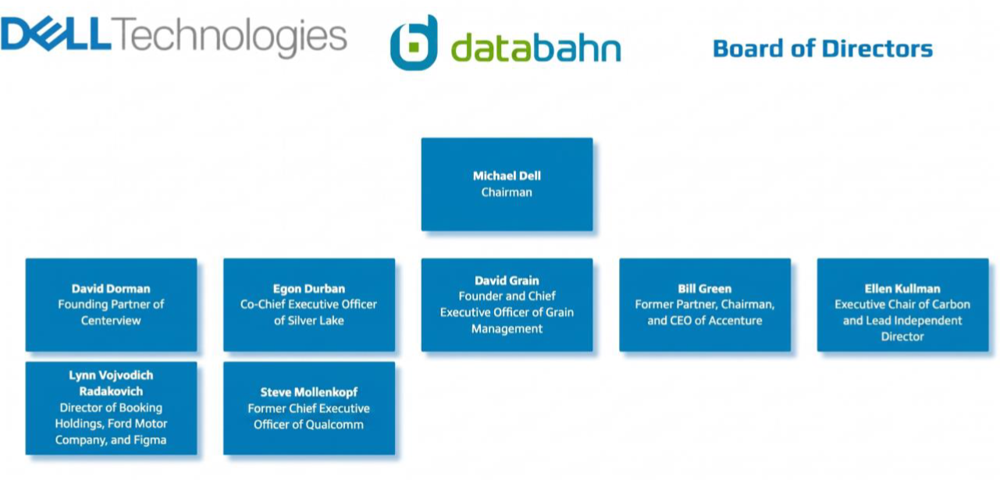
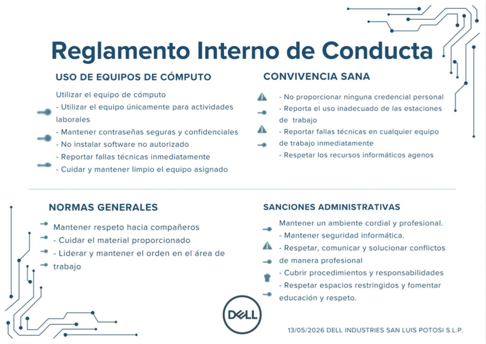

Universidad: Universidad Politécnica de San Luis Potosí
Carrera: Ingeniería en Tecnologías de la Información (ITI)
Asignatura: CNO V Seguridad Informática
Docente: Mtro. Servando López Contreras
Equipo Evaluador: Cavazos Rodolfo, Salazar Pablo, Nieto Jair, Gutiérrez Rodolfo, Morquecho Eduardo, Bustamante Cristopher.
Identidad Corporativa
1. Alcance y Contexto Organizacional
1.1 Descripción de la Organización
Dell Technologies Inc. es una corporación multinacional de tecnología fundada en 1984 por Michael Dell, con sede en Round Rock, Texas. Es uno de los proveedores de soluciones tecnológicas más grandes del mundo, con presencia en más de 180 países y una plantilla superior a 100,000 empleados globales.
- Giro: Diseño, fabricación, comercialización y soporte de productos y servicios tecnológicos de clase empresarial.
- Tamaño: Corporación multinacional de gran escala (Fortune 500). Ingresos superiores a USD 90,000 millones.
- Servicios principales: Hardware (servidores, almacenamiento, redes), soluciones de nube (Dell APEX), seguridad gestionada (Dell SecureWorks), soporte técnico y consultoría.
- Procesos críticos: Desarrollo de software embebido y firmware, cadena de suministro de hardware, operación de centros de datos.
1.2 Misión, Visión y Valores (Objetivos SGSI)
Misión: Impulsar el progreso humano mediante la tecnología, proporcionando productos y servicios scalables y seguros.
Visión: Ser la empresa de tecnología de infraestructura esencial más confiable del mundo, donde la seguridad de la información sea un pilar básico.

1.3 Área, Proceso y Actividad bajo ISO 27001
| Nivel | Descripción del Entorno Crítico |
|---|---|
| Dirección | Ingeniería de Producto y Desarrollo de Software |
| Área | DevSecOps & Platform Engineering |
| Proceso | Ciclo de Vida de Desarrollo Seguro de Software (S-SDLC) |
| Actividad | Gestión segura de repositorios de código fuente, pipelines CI/CD, control de acceso y protección de firmware. |
1.4 Alcance Formal del SGSI, Exclusiones y Supuestos
El SGSI aplica estrictamente al diseño, desarrollo y despliegue de software en el área de DevSecOps & Platform Engineering, incluyendo repositorios Git corporativos y entornos Kubernetes de pruebas. Se excluyen las subsidiarias independientes (Dell Boomi, VMware) y las operaciones de manufactura física de hardware.
2. Referencias Normativas
Para la estructuración y validación del SGSI se tomaron como base los siguientes estándares internacionales organizados por su dominio de aplicación:
- ISO/IEC 27001:2022: Norma principal regulatoria que dicta los requisitos del sistema de gestión.
- ISO/IEC 27002:2022: Código de buenas prácticas para los 93 controles de seguridad (Anexo A).
- ISO/IEC 27034: Directrices esenciales de seguridad en aplicaciones (Security by Design en S-SDLC).
- ISO/IEC 27017 & 27018: Estándares de seguridad y privacidad en entornos Cloud públicos e híbridos (Dell APEX).
- ISO/IEC 27036: Seguridad crítica en la cadena de suministro de componentes de Tecnologías de la Información.
3. Inventario y Clasificación de Activos Críticos
Los activos fueron evaluados según las dimensiones de seguridad CIA (Confidencialidad, Integridad, Disponibilidad) asignando valores de nivel: Alto (A), Medio (M), o Bajo (B).
| ID | Activo de Información | Tipo | Propietario Operativo | Proceso | CIA |
|---|---|---|---|---|---|
| A-01 | Repositorio Git Corporativo (GitHub Enterprise) | Interno | Dir. DevSecOps | S-SDLC / Código Fuente | A - A - A |
| A-02 | Pipeline CI/CD (Jenkins / GitLab CI) | Interno | Gerente S-SDLC | Integración Continua | A - A - A |
| A-04 | Directorio Activo / Azure AD | Interno | Dir. IT Global | Gestión de Identidades (IAM) | A - A - A |
| A-21 | Proveedor Cloud AWS (EC2/S3) | Externo | Dir. IT Global | Infraestructura DevOps | A - A - A |
| A-22 | Repositorios de Código Abierto (npm, PyPI) | Externo | Gerente S-SDLC | Dependencias de Software | M - A - M |
*Nota: El inventario completo del reporte original contempla 40 activos tecnológicos indexados de manera lógica.
4. Liderazgo: Declaración de Políticas de Seguridad
La alta dirección establece compromisos mandatorios para reducir las brechas en el entorno DevSecOps. A continuación se resumen dos de las políticas troncales:
P-01: Control de Acceso e Identidades
Estándar Obligatorio: Todo acceso a los entornos de repositorios y pipelines debe autenticarse mediante MFA robusto basado en hardware token de seguridad (YubiKey).
Línea Base: 100% de cuentas de administración y desarrollo con MFA activo, cero excepciones sin autorización explícita.
P-02: Seguridad en el Ciclo S-SDLC
Estándar Obligatorio: Todo software o código embebido desarrollado por Dell debe superar los umbrales de análisis estático (SAST) y composición (SCA) antes de producción.
Línea Base: Cobertura mínima del 90% de código escaneado por SonarQube/Snyk. Cero fallas críticas libres en releases.
5. Planificación: Matriz de Evaluación de Riesgos
Fórmula de cálculo matemático: NR = Probabilidad X Impacto (Escala de valoración de 1 a 25).
| ID Riesgo | Activo | Amenaza Potencial | Vulnerabilidad Encontrada | Nivel (NR) | Acción / Control |
|---|---|---|---|---|---|
| R-01 | A-01 (Git) | Ransomware dirigido | Ausencia de MFA en conexiones remotas directas | 25 (Crítico) | Mitigar (P-01 MFA + P-08 Respaldo inmutable) |
| R-02 | A-02 (Pipeline) | Inyección de código malicioso | Dependencias externas sin verificación SCA automatizada | 20 (Crítico) | Mitigar (Integración Mandatoria de Snyk) |
| R-06 | A-21 (AWS) | Configuración incorrecta (Misconfiguration) | Falta de auditorías continuas con herramientas CSPM | 12 (Alto) | Mitigar (Fijar score mínimo en AWS Security Hub) |
6. Operación: Procedimiento Técnico de Mitigación
Despliegue operativo seleccionado: Implementación mandatoria de MFA con tokens físicos de hardware (YubiKey) en GitHub Enterprise corporativo.
- Fase de Preparación: Inventariado físico de llaves FIDO2 de respaldo (N=85 ingenieros activos) y creación del grupo de cumplimiento segregado en Azure AD.
- Fase de Configuración: Habilitación del método de autenticación por llave criptográfica y mapeo de políticas de Acceso Condicional en Microsoft Azure.
- Fase de Enrolamiento de Clientes: Talleres técnicos de soporte guiados por el Helpdesk. Vinculación del número de serie único del token con el identificador del usuario final en la CMDB.
- Fase de Forzado: Activación en producción y monitoreo de registros de logs en tiempo real. Intercepción de intentos de suplantación de identidad.
7. Evaluación del Desempeño: Hallazgos de Auditoría Interna
Ejecutado por el Director de Riesgos y Cumplimiento bajo métricas de no conformidades (NC) mayores y menores de la norma:
No Conformidad Mayor (NC-Mayor) - Control C-05:
Se detectó el despliegue del parche crítico de seguridad para la vulnerabilidad en servidores GitLab CE (CVE-2025-44228) en un periodo de 5 días hábiles, excediendo drásticamente el límite estricto de las 72 horas operativas dictadas en el acuerdo general del SGSI.
Acción Correctiva Obligatoria: Diseñar y validar de forma urgente un runbook automático de parches de emergencia para fallas críticas con métricas de severidad CVSS superiores a 9.0.
